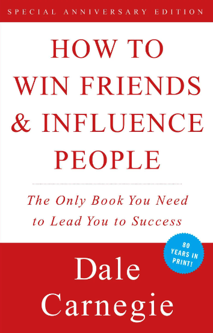

One of my favorite trips I took was a special airbnb I reserved as a birthday trip for my boyfriend. It was a tiny home located in Chester, Vermont. We had a gorgeous tiny home, fire-pit, and star lit sky to ourselves. Our weekend was full of hiking, eating, and relaxing. It doesn’t get better than that!
Here are some favorite pet names:
Here is a link to my favorite resturaunt, Noor Grill. It is my family's establishment, and being completely unbiased, the food is delightful. I grew up eating nothing but rice pilaf, kebab, and salad. It's a taste of home and super fresh!
A dinner plate from noor grill. When having a tradiitonal Armenian meal, we always serve rice pilaf, some sort of meat, crispy salad, and warm pita bread. As a bonus, we also include garlic sauce and pickles occaisonally.
| Title | Cover Image | Author | Summary |
|---|---|---|---|
| Outlander | Diana Gabaldon | "Outlander" follows the story of Claire Randall, a World War II nurse who is transported back in time to 18th-century Scotland. Amidst the turmoil of historical events, she finds herself torn between two vastly different worlds and two passionate men. As she navigates love, adventure, and intrigue, Claire must confront her own desires and loyalties in this captivating tale of romance and time-travel. | |
| The Gene: An Intimate History |  |
Siddhartha Mukherjee | "The Gene: An Intimate History" delves into the complex and fascinating world of genetics, tracing the history of the science from its earliest discoveries to its modern-day breakthroughs. Through compelling narratives and insightful analysis, author Siddhartha Mukherjee explores the profound impact of genetics on humanity's understanding of identity, heredity, and the very essence of life itself. Blending scientific rigor with personal anecdotes, this illuminating work offers a thought-provoking exploration of the genetic code that defines us all. |
| How to Win Friends and Influence People |  | Dale Carnegie | "How to Win Friends and Influence People" by Dale Carnegie is a timeless classic that offers practical advice on interpersonal communication and relationship-building. Through anecdotes and principles, Carnegie teaches readers how to enhance their social skills, influence others positively, and navigate various social situations with grace and confidence. With its emphasis on empathy, understanding, and genuine connection, this book continues to empower readers to cultivate meaningful relationships and achieve success in both personal and professional spheres. |
| Maybe You Should Talk To Someone |  |
Lori Gottlieb | "Maybe You Should Talk to Someone" by Lori Gottlieb provides a candid and insightful exploration of therapy from both the perspective of a therapist and a patient. Through heartfelt anecdotes and introspective reflections, Gottlieb offers readers a window into the complexities of the human psyche and the transformative power of therapy. With warmth, humor, and empathy, she navigates themes of vulnerability, resilience, and the universal quest for meaning, inspiring readers to embrace the journey of self-discovery and seek support when needed. |
A photo of salmon sashimi, I could eat it for days! It is full of vitamins and protein. All it needs is some wasabi and soy.